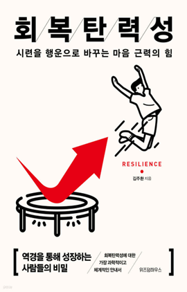

학습 목표
- 1. 직장에서 발생할 수 있는 다양한 문제 상황에서의 감정 반응 유형을 확인하고 자신의 직장 생활에 효과적으로 적용할 수 있다.
- 2. 심리적 어려움을 겪는 상황에서 분명하게 자신의 감정을 인식하고 유형별 대처 방안을 적용하여 극복해낼 수 있다.
교육 특징
-
1. 다양한 실제 사례를 통해 추상적 학습내용을 손쉽게 이해하자!
회복탄력성, 감정 조절 능력, 공감 능력 등 한눈에 알아볼 수 없는 다양한 추상적 개념들을 일러스트 및 디자인 탬플릿을 통해 시각적으로 받아들이고 쉽게 이해할 수 있는 강의
-
2. 학습을 시작하기 전 나의 심리 상태는 어떠할지 사전 점검을 진행하자!
회복탄력성을 향상시키고자 하는 강의의 목표를 효과적으로 달성하기 위해 학습주제에 관한 사전 질문을 제시하여 자신의 심리 상태를 사전에 점검하고 학습에 참여함으로써 학습 효능감을 높이는 강의
-
3. 체계적으로 구조화된 화면과 핵심 요약을 통해 주요 학습내용을 정리하자!
‘오늘의 힐링 Point!’를 제공하여 주요 학습내용을 되짚어 주는 강의
교육 대상
- 1. 기업체 전 임직원
- 2. 직장에서의 갈등 및 어려움을 겪고 있는 직장인
- 3. 심리적 어려움을 극복하고자 하는 모든 일반인
강의 목차
- 제1장 회복탄력성이란?
- 제2장 자기 조절 능력
- 제3장 감정을 건강하게 다스리는 방법
- 제4장 감정 조절 능력이 높은 사람들의 방어기제
- 제5장 대인 관계 능력
- 제6장 깊은 공감 능력으로 회복력 높이기
- 제7장 긍정성 높이기
- 제8장 낙관적 사고 활용하기
강사 소개
강사명
정성훈
경력
現 긍정커뮤니케이션 대표
삼성 멀티캠퍼스 심리학과정 전임교수
한국 능률협회 파트너교수
㈜TNC 교육이사
논문 [성격의 5요인과 계획된 우연 기술의 관계] 2015
저서 [청춘아 매력을 잡아라] 2015
삼성 멀티캠퍼스 심리학과정 전임교수
한국 능률협회 파트너교수
㈜TNC 교육이사
논문 [성격의 5요인과 계획된 우연 기술의 관계] 2015
저서 [청춘아 매력을 잡아라] 2015
참고 도서

도서명
회복탄력성
저자명
김주환
도서소개
20만 독자가 선택한 연세대 김주환 교수의 스테디셀러. 2011년 국내 최초로 '회복탄력성(시련을
이겨내는 긍정적 힘)' 개념을 소개한 이 책은, 수십 년간의 연구 결과와 사례를 바탕으로 독자가 자신의 회복탄력성 지수를 진단하고 실제로 그 힘을 키울
수 있도록 이끌어주는 실용적인 안내서입니다.